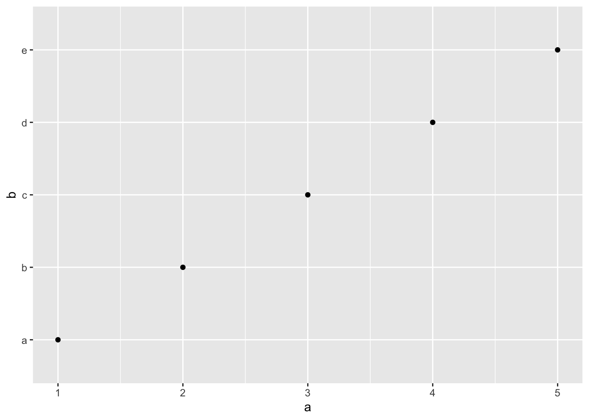

3 Data
This chapter deals explains how to deal with different types of data within R, as well as how to manipulate and save that data. When we are dealing with data we will be using the object of a data frame to save the data within the temporary memory of R itself (shown in the environment). For this chapter, the tidyverse contains the set of packages we will use. The installation and calling of this package is shown in the chunk below:
# install.packages("tidyverse)
library(tidyverse)## ── Attaching core tidyverse packages ──────────────────────── tidyverse 2.0.0 ──
## ✔ dplyr 1.1.1 ✔ readr 2.1.4
## ✔ forcats 1.0.0 ✔ stringr 1.5.0
## ✔ ggplot2 3.4.2 ✔ tibble 3.2.1
## ✔ lubridate 1.9.2 ✔ tidyr 1.3.0
## ✔ purrr 1.0.1
## ── Conflicts ────────────────────────────────────────── tidyverse_conflicts() ──
## ✖ dplyr::filter() masks stats::filter()
## ✖ dplyr::lag() masks stats::lag()
## ℹ Use the conflicted package (<http://conflicted.r-lib.org/>) to force all conflicts to become errorsThe output from calling the tidyverse shows all of the different packages it loads into R at once. These packages are meant to work together for data analysis, wrangling, and visualization.
3.1 Data Frames
Within R itself, a data frame can be created in two different ways: using the tibble() or tribble() functions. An example of how to use each is given in the code chunk below:
# the tibble function joins either manually set or referenced vectors of the same length into a data frame
(data_frame <- tibble(row = c(1,2,3,4,5,6,7,8,9,10), # row_name = vector(length 10)
color = c('red', 'blue', 'yellow', 'green', 'purple', 'orange', 'magenta', 'red', 'purple', 'orange'),
category = c('warm', 'cold', 'warm', 'cold', 'cold', 'warm', 'warm', 'warm', 'cold', 'warm'))) ## # A tibble: 10 × 3
## row color category
## <dbl> <chr> <chr>
## 1 1 red warm
## 2 2 blue cold
## 3 3 yellow warm
## 4 4 green cold
## 5 5 purple cold
## 6 6 orange warm
## 7 7 magenta warm
## 8 8 red warm
## 9 9 purple cold
## 10 10 orange warm3.2 Data Types
Underneath the row name in the <> is the data type of the column. <dbl> refers to double and <chr> refers to characters. The vectors must be the same length for this to work. Each row here has a length of 10. The function is surrounded in parentheses so the output prints.
# the tribble identifies the column name on the first line with the ~ symbol
(data_frame2 <- tribble(~row, ~row2,
1,2, #subsequent rows going across are inputed underneath
3,4,
5,6,
7,8 )) # this provides an alternative method to hand entering these ## # A tibble: 4 × 2
## row row2
## <dbl> <dbl>
## 1 1 2
## 2 3 4
## 3 5 6
## 4 7 8# most of the time this should not be necessary for entering actual data
# this can be useful for making summary tables for output in final workIt is important to make sure each column is the desired data type. If you are trying to use functions that
3.2.1 Date Time Objects
There is a special type for times available through the lubridate package. This package is automatically included in the tidyverse. The code chunk below demonstrates how to use the make_datetime() function. Using this data type ensures that graphs over time are produced properly using ggplot2.
make_datetime(year = 2020, month = 11, day = 25)## [1] "2020-11-25 UTC"3.2.2 Factors
Factors are a specialized data type meant to deal with categorical variables. Factors are available through the forecats package which is apart of the tidyverse. This format best applies to a character variable that has a specified order, such as months in a year. To convert a create a factor you must use the factor() function. The code chunk below shows an example of converting a character vector to a factor using months. The difference can be seen when the factor and character vectors are sorted. Factors are most useful within data frames. They give R a roadmap of how to value character variables properly, making graphing, filtering, and general analysis easier.
mon <- c("Mar", "Apr", "Dec", "Feb", "Nov", "Jun", "Aug", "Jan", "Oct", "May", "Jul", "Sep")
factor <- factor(mon, levels = c("Jan", "Feb", "Mar", "Apr", "May", "Jun",
"Jul", "Aug", "Sep", "Oct", "Nov", "Dec"))
sort(mon)## [1] "Apr" "Aug" "Dec" "Feb" "Jan" "Jul" "Jun" "Mar" "May" "Nov" "Oct" "Sep"sort(factor)## [1] Jan Feb Mar Apr May Jun Jul Aug Sep Oct Nov Dec
## Levels: Jan Feb Mar Apr May Jun Jul Aug Sep Oct Nov Dec3.3 Importing Data
Importing data is an important skill. Data comes in a variety of formats which you must transfer into the data frame format for use with R. One option is to hand type the data into the tibble or tribble function, but this is very time consuming. It is only easiest to use these functions with small data sets or a data frame you want to make into a table.
3.3.1 .csv Files
Most often data you encounter will be available in the .csv format (comma-separated-values). The readr package in the tidyverse provides a very useful function, read_csv() for reading .csv files. An example of how to use the read_csv() function is given in the chunk below:
data <- read_csv(here("sample.csv"))## Rows: 156 Columns: 2
## ── Column specification ────────────────────────────────────────────────────────
## Delimiter: ","
## chr (1): Date
## dbl (1): Sales
##
## ℹ Use `spec()` to retrieve the full column specification for this data.
## ℹ Specify the column types or set `show_col_types = FALSE` to quiet this message.# this reads a csv detailing monthly liquor sales dataIf the .csv file has blank lines at the beginning of the file you can use the skip = parameter to skip lines of the save before it starts to read it. This is often necessary to skip white space at the top and ensure the .csv file correctly reads into a data frame.
3.3.2 Microsoft Excel Files
Excel has changed the way they save their files over time leading to a variety of way that excel files can be read. One important thing to note is excel files can always be saved as .csv files and read that way. If you want to directly read the excel file, the readxl package offers the ability to read an excel file directly into a data frame through the read_excel(file_name) function. The code chunk below shows an example of how to do this. Note: to just use the file name the file must be in the project folder. Otherwise, you need the complete file path or to change the working directory to the folder with the file. If the excel file has multiple sheets, the sheet = parameter allows you to select the sheet by setting it equal to the name of the sheet.
library(readxl)
read_excel("sample.xlsx")## # A tibble: 156 × 2
## Date Sales
## <dttm> <dbl>
## 1 1992-01-01 00:00:00 1519
## 2 1992-02-01 00:00:00 1551
## 3 1992-03-01 00:00:00 1606
## 4 1992-04-01 00:00:00 1686
## 5 1992-05-01 00:00:00 1834
## 6 1992-06-01 00:00:00 1786
## 7 1992-07-01 00:00:00 1924
## 8 1992-08-01 00:00:00 1874
## 9 1992-09-01 00:00:00 1781
## 10 1992-10-01 00:00:00 1894
## # ℹ 146 more rowsExcel has a very useful feature where they can read tables from pictures or screenshots of textbooks. This is present in the data tab of the top bar of excel and identified in the screenshot below. Simply select the file of a picture of the table and excel will try to import it. It isn’t perfect but often get most of it right. Always check that it is correct when using this, it still saves a ton of time.

Excel Picture to Table Tool
3.3.3 RDS Files
.RDS files are meant for use in R and are a good way to save and the read in data frames. They quickly load into R and are often the format I use to save my files when I know I will have to reference them later. The read_rds() function reads existing RDS files into a data frame.
3.3.4 Conclusion
Almost any data you encounter will be in either one of these three formats or able to be converted into one of these formats using methods discussed above. Getting a data file into a data frame is the first step in analyzing data and can sometimes be the most tedious if you are not able to troubleshoot the process effectively. Always check you data!
3.4 Cleaning Data and the Tidyverse
What is clean data? For data to be clean there must be a clear pattern of organization to how the data is stored. This concept is also commonly referred to as tidy data. For this subsection make sure to have install and called the tidyverse package, as it contains tidyr tools used to manipulate data frames.
There are three general rules for making a data set tidy:
- Each variable must have its own column
- Each observation must have its own row
- Each value must have its own cell
Table 1, shown in the code chunk below, is an example of a tidy data set. Each observation (pertaining to a country and a year) has its own row. Additionally, each variable has its own column. This table is included in the tidyverse as an example.1
table1## # A tibble: 6 × 4
## country year cases population
## <chr> <dbl> <dbl> <dbl>
## 1 Afghanistan 1999 745 19987071
## 2 Afghanistan 2000 2666 20595360
## 3 Brazil 1999 37737 172006362
## 4 Brazil 2000 80488 174504898
## 5 China 1999 212258 1272915272
## 6 China 2000 213766 1280428583Often, data when you receive it will not be in this format. The first step after successfully importing data is to clean it. Luckily, the tidyverse offers functions that allow you to rearrange the data into a format better suited for analysis and plotting. I will go through several examples of different common problems with data, and what functions are best to fix them.
3.4.1 Pivoting Data
First, we will discuss the two functions used for pivoting data. The code chunk below shows a sample data frame that has multiple issues, which are able to be corrected through pivoting. Instead of having a column for each variable, the variable type indicates the variable. Columns 3 and 4, which are both doubles (numeric data type), pertain to the year of the value. These are examples of common problems with data.
sample_table## # A tibble: 6 × 4
## type country `1999` `2000`
## <chr> <chr> <dbl> <dbl>
## 1 population Afghanistan 19987071 20595360
## 2 cases Afghanistan 745 2666
## 3 population Brazil 172006362 174594898
## 4 cases Brazil 37737 80488
## 5 population China 1272915272 1280428583
## 6 cases China 212258 213766These two functions in dplyr are each geared to solving one of these problems:
pivot_longer()- this adds rows making the data frame longer
- this corrects the issue with the columns pertaining to the year of the corresponding value
- parameters:
pivot_longer(data, cols, names_to = , values_to = )- data: data frame to pivot
- cols: columns to pivot
- names_to: name of new column containing the names of the pivoted columns
- values_to: name of new column containing the values of the pivoted columns
(longer_table <- pivot_longer(data = sample_table, cols = c(`1999`, `2000`), names_to = "year", values_to = "value"))## # A tibble: 12 × 4
## type country year value
## <chr> <chr> <chr> <dbl>
## 1 population Afghanistan 1999 19987071
## 2 population Afghanistan 2000 20595360
## 3 cases Afghanistan 1999 745
## 4 cases Afghanistan 2000 2666
## 5 population Brazil 1999 172006362
## 6 population Brazil 2000 174594898
## 7 cases Brazil 1999 37737
## 8 cases Brazil 2000 80488
## 9 population China 1999 1272915272
## 10 population China 2000 1280428583
## 11 cases China 1999 212258
## 12 cases China 2000 213766# the data = and cols = are not necessary as they are required parameterspivot_wider()- this adds columns making the data frame wider
- this corrects the issue that each variable does not have its own column
- parameters:
pivot_wider(data, names from = , values_from = )- data: data frame to pivot
- names_from: column whos values are the names of the new columns
- values_from: column whos values are the values of the new columns
# this pivots the data frame after the longer pivot above
pivot_wider(longer_table, names_from = type, values_from = value )## # A tibble: 6 × 4
## country year population cases
## <chr> <chr> <dbl> <dbl>
## 1 Afghanistan 1999 19987071 745
## 2 Afghanistan 2000 20595360 2666
## 3 Brazil 1999 172006362 37737
## 4 Brazil 2000 174594898 80488
## 5 China 1999 1272915272 212258
## 6 China 2000 1280428583 213766# note without an assignment operator this is not saved3.4.2 Creating New Variables
Often in working with data you will want to create a new variable. These can be numeric variables that combine values already present in the data or categorical variables that differentiate the values in some way.
This first example in the code chunk below demonstrates how to make a new numeric variable using two existing numeric variables. This creates a new row that is the number of cases divided by the total population that year.
mutate(table1, cases_per_cap = cases / population)## # A tibble: 6 × 5
## country year cases population cases_per_cap
## <chr> <dbl> <dbl> <dbl> <dbl>
## 1 Afghanistan 1999 745 19987071 0.0000373
## 2 Afghanistan 2000 2666 20595360 0.000129
## 3 Brazil 1999 37737 172006362 0.000219
## 4 Brazil 2000 80488 174504898 0.000461
## 5 China 1999 212258 1272915272 0.000167
## 6 China 2000 213766 1280428583 0.000167# on the left side of the equal sign is the name of the new variables
# on the right side is the new variableYou can use vectors, but must be careful when doing so. The vector must have the same length as the data frame has rows. Additionally, it is important to note that the first element will belong to the observation of the first row. It is important to make sure that you are assigning values to the correct observation, otherwise your data will become corrupted invalidating any work past this point. The code chunk below shows an example of using a vector to create a new column in table 1.
new_var <- c(0.5, 2.1, 3.4, 0.3, 0.78, 1.64) # this does not correspond to anything
mutate(table1, value = new_var) # the new var has a length of 6 so this works## # A tibble: 6 × 5
## country year cases population value
## <chr> <dbl> <dbl> <dbl> <dbl>
## 1 Afghanistan 1999 745 19987071 0.5
## 2 Afghanistan 2000 2666 20595360 2.1
## 3 Brazil 1999 37737 172006362 3.4
## 4 Brazil 2000 80488 174504898 0.3
## 5 China 1999 212258 1272915272 0.78
## 6 China 2000 213766 1280428583 1.64# any other length would cause an errorThis next examples demonstrates how to use the case_when() function. The case_when() function is very useful when creating a new categorical variable based on other already existing variables. The code chunk below demonstrates the correct syntax.
(new_table <- mutate(table1, cases_per_cap = case_when(cases / population < 0.0001 ~ "low",
cases / population >= 0.0001 & cases / population < 0.0003 ~ "medium",
cases / population >= 0.0003 ~ "high")))## # A tibble: 6 × 5
## country year cases population cases_per_cap
## <chr> <dbl> <dbl> <dbl> <chr>
## 1 Afghanistan 1999 745 19987071 low
## 2 Afghanistan 2000 2666 20595360 medium
## 3 Brazil 1999 37737 172006362 medium
## 4 Brazil 2000 80488 174504898 high
## 5 China 1999 212258 1272915272 medium
## 6 China 2000 213766 1280428583 mediumThis creates a low, medium, or high categorical variable indicated the number of cases per capita. This creates the variable in the character data type. To make this into a factor you can overwrite the variable using mutate with the function to turn it into a factor. This is demonstrated in the code chunk below.
mutate(new_table, cases_per_cap = factor(cases_per_cap, levels = c("low", "medium", "high")))## # A tibble: 6 × 5
## country year cases population cases_per_cap
## <chr> <dbl> <dbl> <dbl> <fct>
## 1 Afghanistan 1999 745 19987071 low
## 2 Afghanistan 2000 2666 20595360 medium
## 3 Brazil 1999 37737 172006362 medium
## 4 Brazil 2000 80488 174504898 high
## 5 China 1999 212258 1272915272 medium
## 6 China 2000 213766 1280428583 medium3.4.3 Renaming Variables and Piping
It is very important to make sure the names of the columns comply with the conventions of coding and clearly indicate what it is. Most data sets have a code book that lists each variable and what it represents, but these names are often not conducive to identifying the variable during analysis. To rename the columns in a data frame use the rename() function available with the tidyverse. The code chunk below demonstrates this using the data frame longer table, saved after the first pivoting exercise above.
rename(longer_table, numbers = value)## # A tibble: 12 × 4
## type country year numbers
## <chr> <chr> <chr> <dbl>
## 1 population Afghanistan 1999 19987071
## 2 population Afghanistan 2000 20595360
## 3 cases Afghanistan 1999 745
## 4 cases Afghanistan 2000 2666
## 5 population Brazil 1999 172006362
## 6 population Brazil 2000 174594898
## 7 cases Brazil 1999 37737
## 8 cases Brazil 2000 80488
## 9 population China 1999 1272915272
## 10 population China 2000 1280428583
## 11 cases China 1999 212258
## 12 cases China 2000 213766# the name you want to change the column to is on the left of the equal sign
# the current name of the column is on the right of the equal signPiping is an operator that exists within R that allows for much quicker workflow while coding. It is a powerful tool that can be used with almost any function in the tidyverse. I am going to use the rename function as an example of how to use it. In the code chunk below, I use the rename function to change the names of two columns.
#this can be done with multiple columns
longer_table |> # the extra line is unnecessary but improves the readability of your code
rename(numbers = value, time = year)## # A tibble: 12 × 4
## type country time numbers
## <chr> <chr> <chr> <dbl>
## 1 population Afghanistan 1999 19987071
## 2 population Afghanistan 2000 20595360
## 3 cases Afghanistan 1999 745
## 4 cases Afghanistan 2000 2666
## 5 population Brazil 1999 172006362
## 6 population Brazil 2000 174594898
## 7 cases Brazil 1999 37737
## 8 cases Brazil 2000 80488
## 9 population China 1999 1272915272
## 10 population China 2000 1280428583
## 11 cases China 1999 212258
## 12 cases China 2000 213766The piping operator allows me to use the output of longer_table and use it as the data parameter for the next function, in this case the rename() function. The most useful part of the piping operator is that it allows you to chain multiple functions together, each accepting as the data parameter the output from the last code before the last piping operator. The code chunk below demonstrates this by both pivoting and renaming longer_table using the piping operator. From this point forward, I will be using examples of piping when demonstrating new concepts.
longer_table |>
pivot_wider( names_from = type, values_from = value) |>
rename(pop = population, time = year)## # A tibble: 6 × 4
## country time pop cases
## <chr> <chr> <dbl> <dbl>
## 1 Afghanistan 1999 19987071 745
## 2 Afghanistan 2000 20595360 2666
## 3 Brazil 1999 172006362 37737
## 4 Brazil 2000 174594898 80488
## 5 China 1999 1272915272 212258
## 6 China 2000 1280428583 2137663.4.4 Filtering Data
Filtering allows you to look at the subset of a data frame. It keeps rows that match a conditional statement (logical expression covered in Chapter 1). This can be done according to a single or multiple conditions. This is done through the filter(data, conditions) function in the tidyverse. The code chunk below filters Table 1, restricting it to only data pertaining to Afghanistan. This shows how it can be very useful when dealing with categorical variables.
table1 |>
filter(country == "Afghanistan") # need to use a double equals sign for conditional expressions## # A tibble: 2 × 4
## country year cases population
## <chr> <dbl> <dbl> <dbl>
## 1 Afghanistan 1999 745 19987071
## 2 Afghanistan 2000 2666 20595360# the match on the right side of the equals sign must be the same data type as the column referencedIt is also very useful when dealing with numeric variables as well. The code chunk below demonstrates simple and more complex numeric filters. The conditional statements can be combine using & (and) and | (or) operators. While this simple example restricts the data frame to only one row, this function is much more powerful in large and aggregated data sets.
table1 |> filter(population > 20000000) ## # A tibble: 5 × 4
## country year cases population
## <chr> <dbl> <dbl> <dbl>
## 1 Afghanistan 2000 2666 20595360
## 2 Brazil 1999 37737 172006362
## 3 Brazil 2000 80488 174504898
## 4 China 1999 212258 1272915272
## 5 China 2000 213766 1280428583# only keeps rows where population is greater than twenty million
table1 |> filter(population < 20000000 | population > 1000000000)## # A tibble: 3 × 4
## country year cases population
## <chr> <dbl> <dbl> <dbl>
## 1 Afghanistan 1999 745 19987071
## 2 China 1999 212258 1272915272
## 3 China 2000 213766 1280428583# when using the | operator, if one or both of the conditionals evaluates to true,
# then the whole statement evaluates as true and the row is kept
table1 |> filter(country == "Afghanistan" & year == 2000)## # A tibble: 1 × 4
## country year cases population
## <chr> <dbl> <dbl> <dbl>
## 1 Afghanistan 2000 2666 20595360# when using the & operator, both conditionals must be true for the whole
# statement to evaluate as true and the row is kept3.4.5 Grouping and Summarizing Data
The summary function allows the creation of summary statistics of the data. These tables are vitally important in analysis and can be crucial elements of analysis that back up claims in written submitted work.
3.4.6 Joining Data Sets
There can be cases when two different data sets contain variables you want to analyze in context with each other. This requires that you merge the data using a key variable, a variable or collection of variables that are the same between both data sets and uniquely identify observations.
3.5 Saving Files
Saving data frames allows you to save a snapshot of the data as you are going through your analysis. This can be useful when cleaning data. Often you will not need all the data as given or will have to alter the data to make it work with the tools for analysis. In the previous section, I discussed what clean data is and how to clean your data using the tools of the tidyverse. It is still important to preserve the data as you received it for reference later on and to prevent deletion of data that you are unable to recover. By having the original file saved as is, you are always able to go back and retrace your steps in cleaning the data from the original formatting.
3.5.1 Saving Data Frames
Saving data frames can be very useful to reference your dataset in the desired and clean format, as well as for saving summary tables of the data or your own custom tables for later display. For saving these types of files, I recommend saving them as RDS files, as they are the easiest for R to quickly read and then allow you to display the results in whatever format you wish. The code chunk below create a sample data frame called object to save as an RDS file and then uses the saveRDS() function to save the file.
# This creates a sample data frame to save as an RDS file
object = tibble(
a = c(1,2,3,4,5),
b = c('a', 'b', 'c', 'd', 'e')
)
saveRDS(object, file = "file_name.rds") # the first parameter is the object you want to save
# in the file name it is important to end it with .rds so the computer knows what type of file it isTo reload these files into R, or call them in another document, use the readRDS() as shown below:
readRDS("file_name.rds")## # A tibble: 5 × 2
## a b
## <dbl> <chr>
## 1 1 a
## 2 2 b
## 3 3 c
## 4 4 d
## 5 5 e3.5.2 Saving Images
THIS SECTION IS HAVING ISSUES: WHAT IS THE BEST WAY TO DO THIS?
Images should be saved in the png format for easy display. This can be done easily using the png package. A png can be referenced in markdown using this format:  This line should not be coded within a chunk, it should be part of the actual markdown document itself. The alt text is what you want to caption the image. The code chunk below shows how to save a png. To create something to save, I have graphed the sample tibble from the previous section. The data for this plot does not refer to anything so please don’t use this as an example of how to make graphs This is a demonstration of how to save these for later reference. Subsequent sections will cover how to approach making graphs using the ggplot2 package and extensions.
library(png)
(image <- ggplot(data = object) +
geom_point(mapping = aes(x = a, y = b)))
#writePNG(image, target = "file_name.png")
save(image, file = "file_name.png")